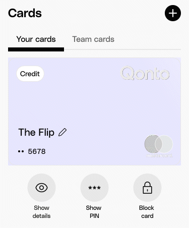
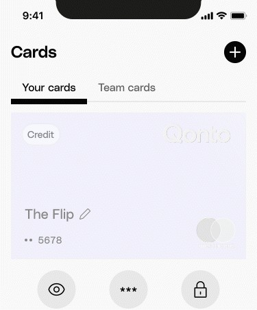
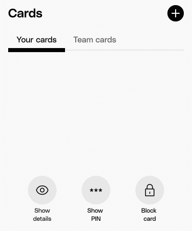
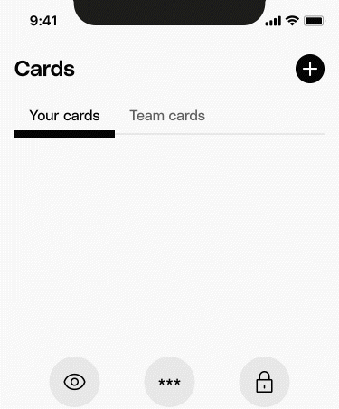
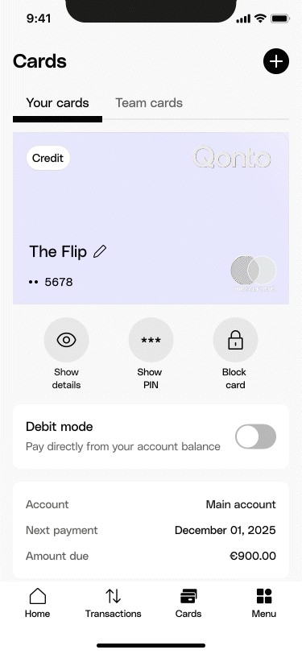
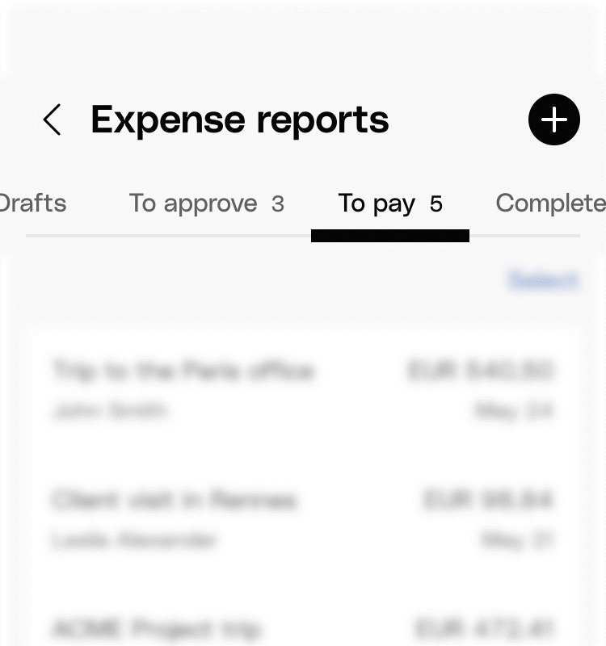
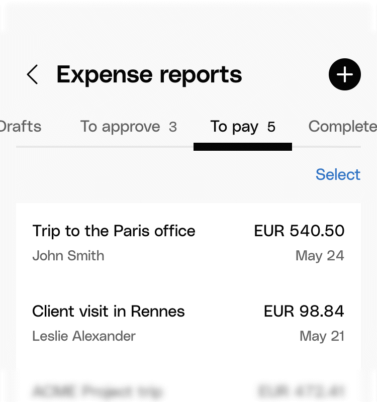
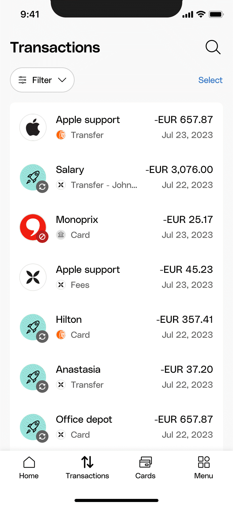
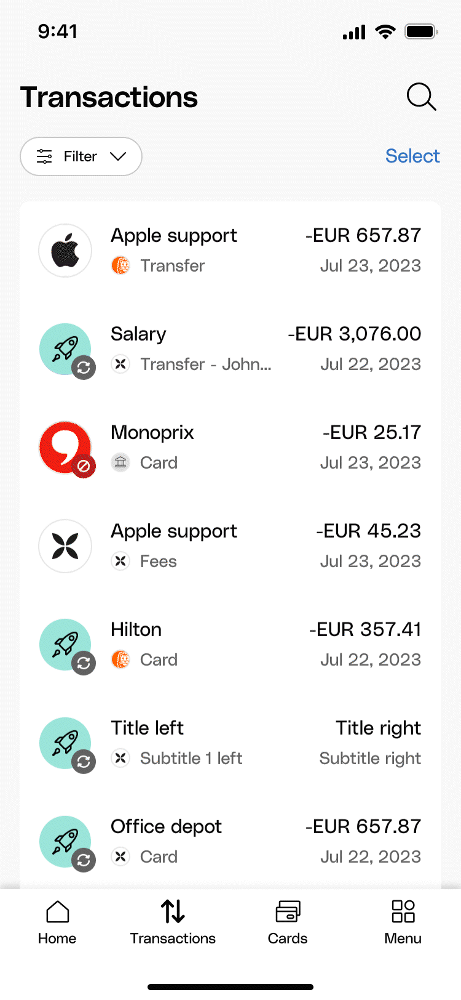
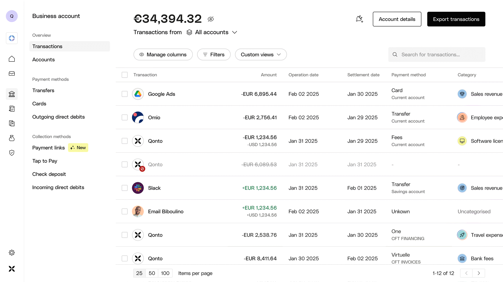

Real product specs with custom timing curves, stagger patterns, and choreographed sequences. Implementation-ready, production-tested.
Motion specs bridge design intent and user experience. I prototype in Rive, apply system tokens, create detailed specs, and QA on real devices. Each spec challenges: why this timing? why this easing? what's the user feeling?
Real product specs with custom timing curves, stagger patterns, and choreographed sequences. Implementation-ready, production-tested.
Loading state for card switching: existing card fades out to 40% → spinner fades in and out → new card fades in with shine effect. Spinner on card only (best for short load times, already used on platform). Spec uses motion tokens throughout.





| Existing card 40% fade out | Duration motion-duration-300, Easing motion-easing-linear, Alpha 100→40 |
| Spinner fade in | Duration 300ms, Easing linear, Alpha 0→100 |
| Spinner fade out | Duration 300ms, Easing linear, Alpha 100→0 |
| New card fade in | Duration 300ms, Easing linear, Alpha 0→100 |
| Shine effect | Duration motion-duration-1000, Easing motion-easing-smooth, Delay motion-delay-150 (after new card), Translate 32px→88px |
Carousel transition between highlights: title/subtitle position + opacity, asset transitions, background fade. Last highlight has only animation in, not out.
| Title | 400ms position + 150ms opacity |
| Subtitle | 400ms position + 150ms opacity with delays |
Splash to welcome: logo slide up + fade → background fade → sequential content reveal. Logo 250ms slide + fade, Photo delay 0, Wordmark delay 250ms, CTAs delay 600ms.
| Logo | 250ms slide + fade |
| Photo | 250ms, delay 0 |
| Wordmark | 350ms, delay 250ms |
| CTAs | 350ms, delay 600ms |
Selection mode: main header (title, filters) slides left and fades out; selection header (bulk actions, select all, count) slides in from the right and fades in. Bottom bar slides down and fades out. Headline always right → left. Two variants: V1 slide + fade (300ms position, 200ms opacity), V2 fade only (150ms). Tabs and body follow headline or match its tokens.



| V1 — Slide + fade | |
| Main page component | Opacity 100%→0% 200ms linear; Position X 375→357 300ms cubic-bezier |
| Selection mode header | Opacity 0%→100% 200ms linear; Position X 394→375 300ms, delay 100ms cubic-bezier |
| Bottom bar | Position Y +100px 400ms cubic-bezier |
| V2 — Fade only | |
| Main page component | Opacity 100%→0% 150ms linear |
| Selection mode header | Opacity 0%→100% 150ms linear, delay 50ms |
| Headline | Always right → left; same in every screen |
| Tabs | Same duration as headline; follow body or headline |
| Body | Start with headline or new text; duration similar to action |
| Select + checkbox | Jump/cut; animate with body; Select all after 3 frames |
Upsell card appears after 4 seconds. Card slides up with fade; transactions table pushes down for spatial awareness. Mobile: 800ms position + 350ms opacity. Desktop: 1000ms position + 350ms opacity.


| Mobile | 800ms position + 350ms opacity |
| Desktop | 1000ms position + 350ms opacity, Delay 4s after landing |
Progress indicator for multi-step flows. Steps overlap by 250ms. Custom cubic-beziers at three keyframes: quick start, smooth mid-transition, confident finish.
| Duration | motion-duration-1500 1500ms |
| Step overlap | 250ms before previous ends |
| Easing | Custom cubic-bezier keyframes |
Continuous text reveal behind a mask for personalized account setup. Each sequence 2.5s minimum. 300ms position + 150ms fade-in (delay 150ms).
| Text Position | 300ms, translate Y |
| Text Fade In | 150ms, delay 150ms |
Every timing decision is a conversation: Does this serve the user? Does it feel right? Engineers get implementation-ready specs. Product designers get motion that matches their vision. Users get polished experiences.